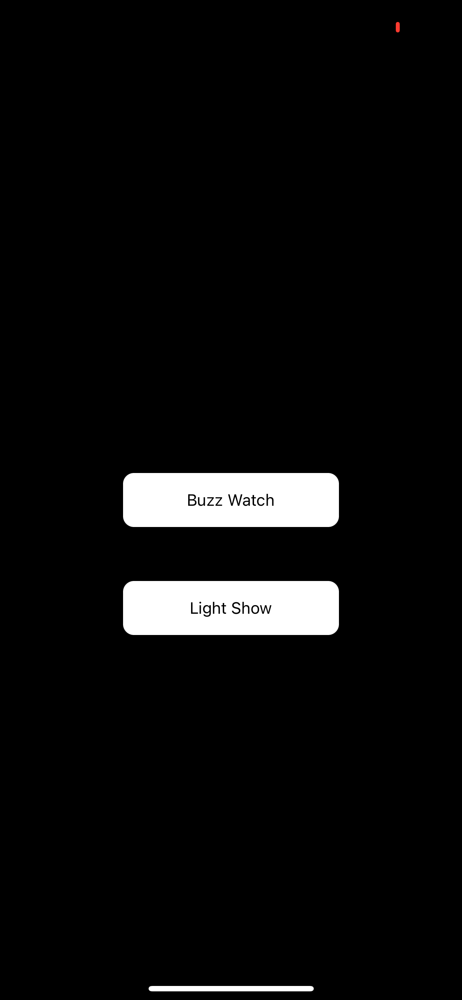

Keeping motorcycle riders alive through technology!
Contact Mouse Pup at mousepuptechnology@gmail.com
Mouse Pup Haptic bluetooth code is now public on the github public repository: https://github.com/kimmerandcasper/MousePup/tree/main
Mouse Pup is currently developing a gauntlet paried with a Bluetooth communication app designed to provide riders with visual and haptic stimuli, triggered by movement in camera technology identifying objects in their blindspot.
Below is the 1st prototype of the build (a garage build). The hardware is an estimated 3-5 variations away from manufacturable. The iOS application is 2-3 after motion detection integration. A screenshot of MP v1 base Haptic iOS app is below this video.
